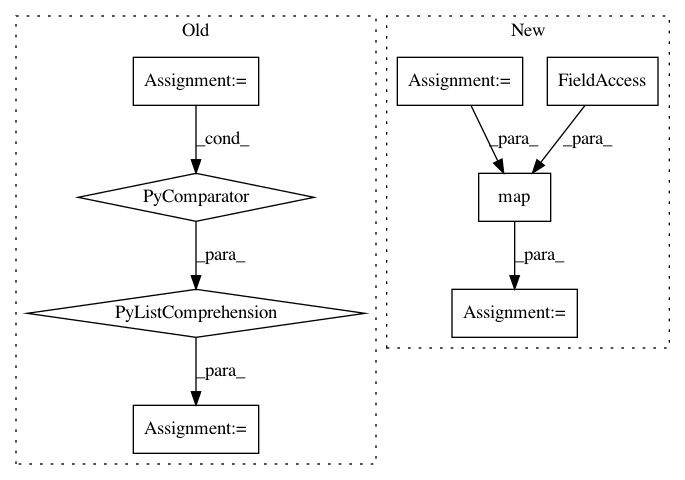

f4af38defd9b7c1a478f7336b8754020155f9147,torchtext/experimental/datasets/language_modeling.py,,_setup_datasets,#Any#Any#Any#Any#Any#Any#Any#Any#,64
Before Change
raw_data[name], = raw.DATASETS[dataset_name](root=root, data_select=name, year=year, language=language)
else:
raw_data[name], = raw.DATASETS[dataset_name](root=root, data_select=name)
raw_data[name] = [text_transform(txt) for txt in raw_data[name]]
return tuple(LanguageModelingDataset(raw_data[item], vocab, text_transform, single_line)
for item in data_select)
After Change
raw_datasets = raw.DATASETS[dataset_name](root=root, data_select=data_select, year=year, language=language)
else:
raw_datasets = raw.DATASETS[dataset_name](root=root, data_select=data_select)
raw_data = {name: list(map(text_transform, raw_dataset)) for name, raw_dataset in zip(data_select, raw_datasets)}
return tuple(LanguageModelingDataset(raw_data[item], vocab, text_transform, single_line)
for item in data_select)
In pattern: SUPERPATTERN
Frequency: 4
Non-data size: 8
Instances
Project Name: pytorch/text
Commit Name: f4af38defd9b7c1a478f7336b8754020155f9147
Time: 2020-10-12
Author: 6156351+zhangguanheng66@users.noreply.github.com
File Name: torchtext/experimental/datasets/language_modeling.py
Class Name:
Method Name: _setup_datasets
Project Name: prody/ProDy
Commit Name: ce40fdaaeed673b3271ac72920411731e18fe350
Time: 2013-11-22
Author: lordnapi@gmail.com
File Name: lib/prody/__init__.py
Class Name:
Method Name:
Project Name: tensorflow/datasets
Commit Name: 39dbfb828e326036417b38de58d50ac42f9dfa28
Time: 2019-09-19
Author: pierrot@google.com
File Name: tensorflow_datasets/scripts/document_datasets.py
Class Name:
Method Name: make_module_to_builder_dict
Project Name: bashtage/linearmodels
Commit Name: 1345f1b1b41c047a95deff2442283025c3f6269f
Time: 2019-03-12
Author: kevin.k.sheppard@gmail.com
File Name: linearmodels/tests/panel/test_panel_ols.py
Class Name:
Method Name: